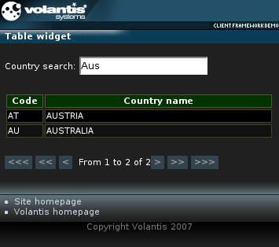

The AJAX Table widget extends the functionality of the standard XDIME 2 table. Loading of the widget contents can be done via AJAX requests, and may be deferred, so that it is only loaded when the user requests it. In addition, body of the table can be divided into pages with fixed number of rows.

<widget:table>
<thead>
<tr>
<th>Code</th>
<th>Country name</th>
</tr>
</thead>
<widget:tbody id="tbody" cached-pages-count="10" style="mcs-table-rows-per-page:10">
<widget:load src="service/table" when="onload"/>
<tr>
<td>--</td>
<td>Loading, please wait...</td>
</tr>
</widget:tbody>
</widget:table><widget:load src="service/table" when="onload"/>
service/table?mcs-start=5&mcs-count=20
<?xml version="1.0" encoding="UTF-8"?>
<response:response xmlns="http://www.w3.org/2002/06/xhtml2"
xmlns:mcs="http://www.volantis.com/xmlns/2006/01/xdime/mcs"
xmlns:widget="http://www.volantis.com/xmlns/2006/05/widget"
xmlns:response="http://www.volantis.com/xmlns/2006/05/widget/response">
<response:head>
<response:link rel="mcs:theme" href="/themes/main.mthm"/>
</response:head>
<response:body>
<response:tbody total-rows-count="202">
<tr style="background-color:#000">
<td style="border: 1px solid #442">AD</td>
<td style="border: 1px solid #442">ANDORRA</td>
</tr>
<tr style="background-color:#111">
<td style="border: 1px solid #442">AE</td>
<td style="border: 1px solid #442">UNITED ARAB EMIRATES</td>
</tr>
</response:tbody>
</response:body>
</response:response>
<?xml version="1.0" encoding="UTF-8"?>
<response:response xmlns="http://www.w3.org/2002/06/xhtml2"
xmlns:mcs="http://www.volantis.com/xmlns/2006/01/xdime/mcs"
xmlns:widget="http://www.volantis.com/xmlns/2006/05/widget"
xmlns:response="http://www.volantis.com/xmlns/2006/05/widget/response">
<response:head>
<response:link rel="mcs:theme" href="/themes/main.mthm"/>
</response:head>
<response:body>
<response:error>Information could not be retrieved.</response:error>
</response:body>
</response:response><widget:button action="tbody#first-page"><<<</widget:button> <widget:button action="tbody#previous-page"><<</widget:button> <widget:button action="tbody#previous-row"><</widget:button> <widget:button action="tbody#next-row">></widget:button> <widget:button action="tbody#next-page">>></widget:button> <widget:button action="tbody#last-page">>>></widget:button>
From <widget:display property="tbody#start-row-number"/> to <widget:display property="tbody#end-row-number"/> of <widget:display property="tbody#rows-count"/>
<widget:input id="query"/>
<widget:script id="load-script">
$W('tbody').getLoad().setSrc('service/table?mcs-query='+$W('query').getPartialValue())
$W('tbody').getLoad().execute()
</widget:script><widget:handler event="query#partial-value#value-changed" action="load-script#invoke"/>
<?xml version="1.0" encoding="UTF-8"?>
<html xmlns="http://www.w3.org/2002/06/xhtml2"
xmlns:mcs="http://www.volantis.com/xmlns/2006/01/xdime/mcs"
xmlns:template="http://www.volantis.com/xmlns/marlin-template"
xmlns:widget="http://www.volantis.com/xmlns/2006/05/widget">
<head>
<title>Table widget</title>
<link rel="mcs:theme" href="/themes/main.mthm"/>
<link rel="mcs:layout" href="/layouts/main.mlyt"/>
<widget:handler event="query#partial-value#value-changed"
action="load-script#invoke"/>
<style type="text/css">
table {
border: 2px solid #553;
border-collapse: collapse;
}
th {
border: 1px solid #553;
}
</style>
<widget:script id="load-script">
$W('tbody').getLoad().setSrc('service/table?mcs-query='+$W('query')
.getPartialValue())
$W('tbody').getLoad().execute()
</widget:script>
</head>
<body>
<template:apply href="templates/demo-main.xdtpl">
<template:binding name="title" value="Table widget"/>
<template:binding name="content">
<template:complexValue>
<div>
<p>Country search: <widget:input id="query"/></p>
<widget:display style="color:red; font-weight:bold"
property="tbody#load-error-message"/>
<widget:table style="width:32em">
<thead>
<tr style="background-color:#030">
<th style="width:4em">Code</th>
<th>Country name</th>
</tr>
</thead>
<widget:tbody id="tbody" cached-pages-count="10"
style="mcs-table-rows-per-page:10">
<widget:load src="service/table" when="onload"/>
<tr>
<td>--</td>
<td>Loading, please wait...</td>
</tr>
</widget:tbody>
</widget:table>
<p>
<widget:button action="tbody#first-page"><<<</widget:button>
<widget:button action="tbody#previous-page"><<</widget:button>
<widget:button action="tbody#previous-row"><</widget:button>
From <widget:display property="tbody#start-row-number"/>
to <widget:display property="tbody#end-row-number"/>
of <widget:display property="tbody#rows-count"/>
<widget:button action="tbody#next-row">></widget:button>
<widget:button action="tbody#next-page">>></widget:button>
<widget:button action="tbody#last-page">>>></widget:button>
</p>
</div>
</template:complexValue>
</template:binding>
</template:apply>
</body>
</html>
| Name | Purpose |
|---|---|
| div | A section used to add extra structure to documents. Style sheets can be used to control the presentation. |
| p | Block element that defines a paragraph. |
| response:tbody | Response element for a Table widget. |
| td | A cell in a table containing data. |
| thead | Container for a table header. |
| tr | Denotes a row within a table. |
| widget:button | A general purpose element, used by widgets which need a button-like control. |
| widget:display | An inline widget element used to display some text content. It may be associated with a widget property. In such cases, the displayed content represents the value of the selected property. |
| widget:handler | Associates an event with an action; that is when a widget sends the event, the associated action is invoked. |
| widget:input | A general purpose element, used by widgets which need a text input control which is not associated with a form. |
| widget:load | Controls the loading of a widget's contents in relation to the containing page. |
| widget:script | Contains a script that can be executed by the invoke action. |
| widget:table | Defines a Table widget. |
| widget:tbody | Defines body of the AJAX Table widget. |
| Core attributes | Attributes that are common to XDIME 2 elements. |